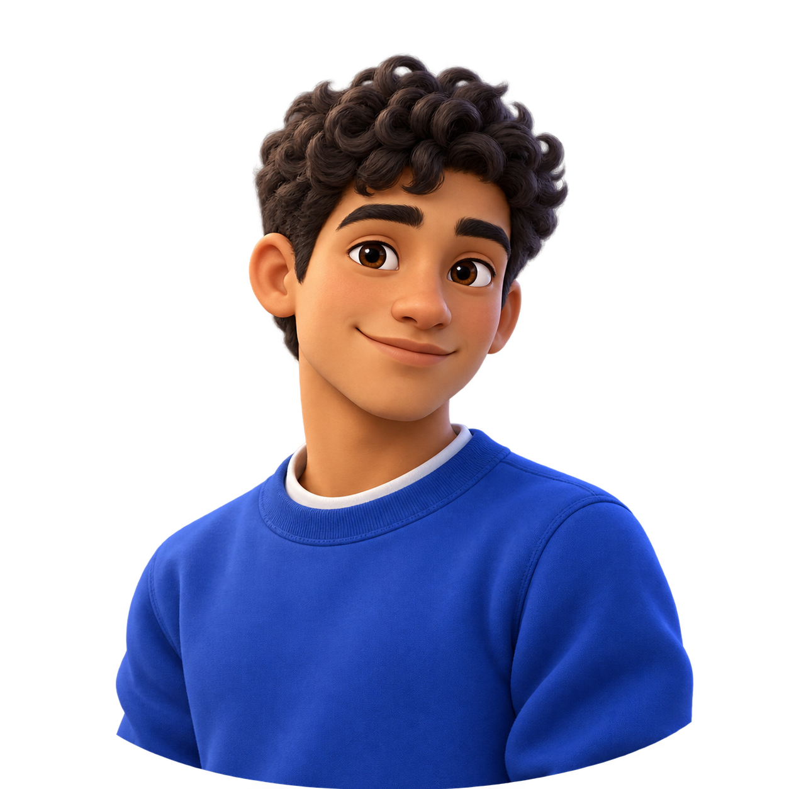
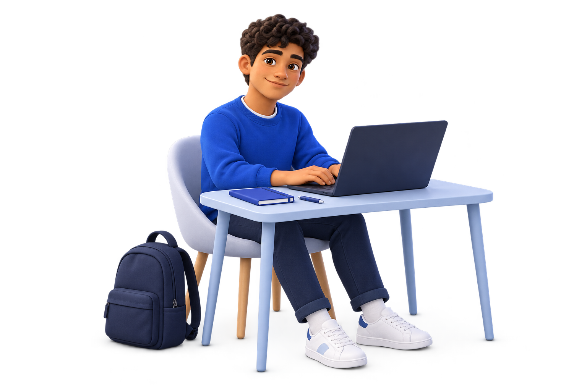
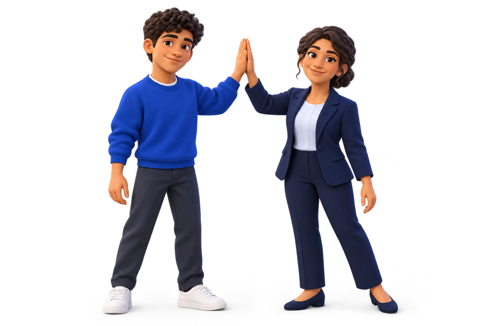

Internly · Illustration collection
A little more human.
Two familiar faces, six moments, and a pair of gentle loops. Ready to bring warmth to the next opportunity.
6 illustrations · 2 loops







A little motion.
Six seconds each. Silent and seamless. Press play to preview; change the background above to check transparency.